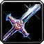
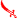
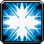
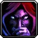

Forgiata quando l'ultimo sole toccò la lama, non ha più smesso di ricordarlo.
Lama a filo singolo in acciaio runico, bilanciata per essere impugnata a una o due mani. L'elsa reca incise due rune ancora attive.